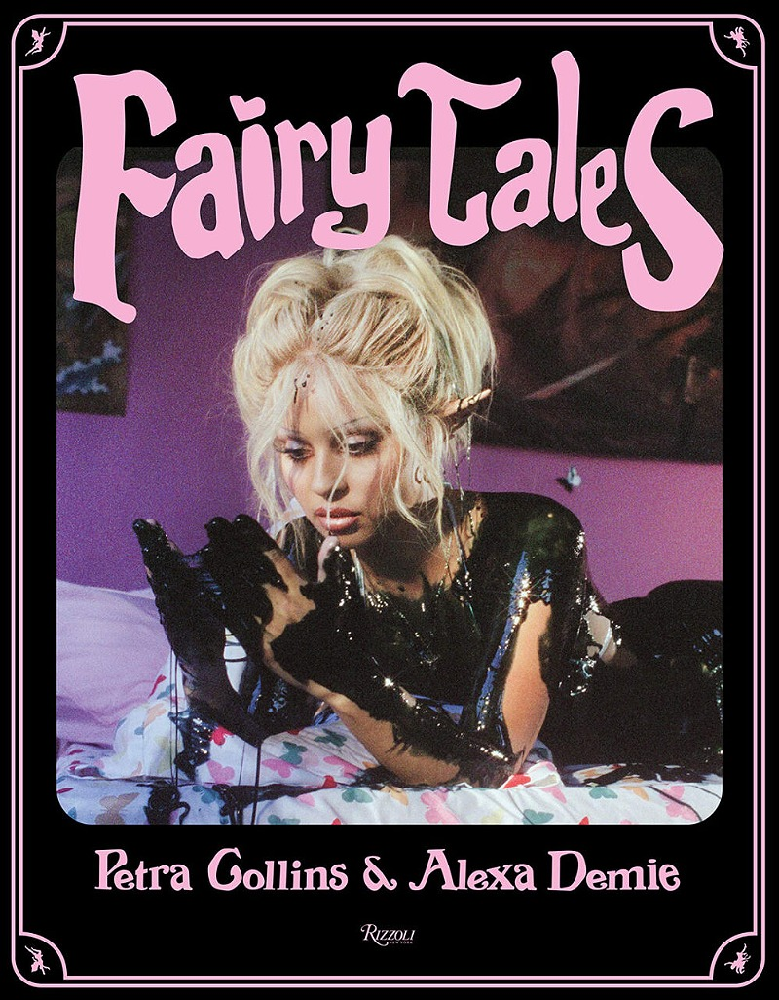

In my Image and Text Wayposts 1, I wrote about Petra Collins' work:
Petra Collins’ photography creates a heightened sense of unreality, a surreal world in which the aberrant elements of femininity are enhanced and elevated. Her objectification and commodification of the female form and its bodily functions goes past the fantasy of the male gaze, transforming the ‘ideal feminine’ into something demonic and repulsive. In particular, her use of thick blood/discharge-like substances in Fairy Tales, starring Alexa Demie, relates to the abject art genre.
The phototgraphy book Fairy Tales has long been an inspiration to my work and has completely informed my style of photography over the past five-ish years. I especially love the way that Collins plays with light and costuming. See also the photography of Chessa Subbiondo. In this particular photography book as well, the textual content is children's stories, which is juxtaposed with seemingly unrelated, almost pornographic images of Alexa Demie in sexualised positions, states of undress and bondage. I would love to play with a clash between two forms of content in my own work.
click here to learn more

